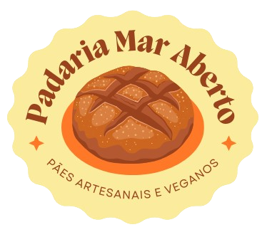
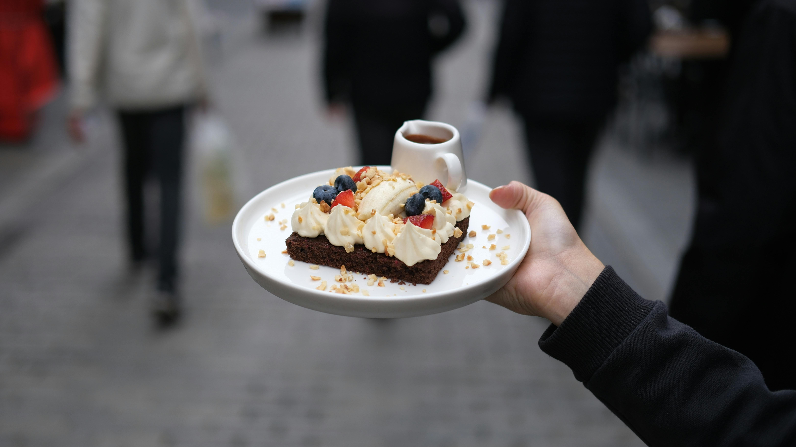

Descubra uma experiência única em panificação, com pães artesanais, doces irresistíveis e um aroma que faz você se sentir em casa.
Venha nos conhecer!
Nossos pães são feitos com ingredientes selecionados, garantindo qualidade e sabor em cada mordida. Seguimos receitas tradicionais e utilizamos técnicas artesanais para oferecer um produto único e especial.
Além disso, todos os nossos pães são preparados diariamente, garantindo frescor e uma experiência inesquecível. Aqui, cada detalhe é pensado para levar até você o melhor da panificação.
Saiba Mais